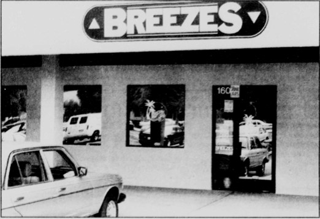

11560 Los Osos Valley Road, San Luis Obispo, CA 93401

Newspaper photo of the exterior of Breezes taken shortly before the bar's closing at the end of 1997.
Photo by Jason Kaltenbach for November 25, 1997 edition of Mustang Daily.
Shot of the interior and bar of Breezes. Photo provided by former owner Lisa Dean. Time of photograph unknown.
Breezes was a gay bar in SLO from February 1992 to December 31, 1997. It was the most recent gay bar in Central Coast history and was the first to be openly LGBTQ+ centered.
The bar and restaurant was a place for adults in the queer community to meet, socialize, and unwind together.
Full article from November 25, 1997 edition of Mustang Daily discussing the closing of Breezes.
If you'd enjoy reading more about the history of San Luis Obispo, check out the Digital Commons hosting all historical editions of Mustang Daily.
If you want to learn more about Breezes watch this excerpt of an oral history interview with former owner Lisa Dean.
You can watch the whole interview and learn more about queer history at Central Coast Queer Archive Project!